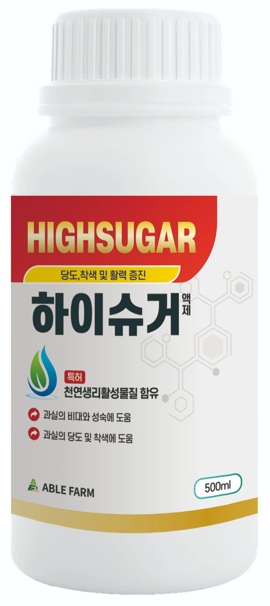

미량요소복합 액제
하이슈거
당도 · 착색 및 활력 증진
천연생리활성물질을 최고 함량으로 담아 과실 비대·성숙과 당분 함량·저장성을 높여 맛·당도·착색을 끌어올리는 수확 후기용 당 증진제입니다.
사용 방법
- 희석 배수
- 500~1,000배 (물 20ℓ당 40~20㎖)
- 사용 시기
- 수확 30~50일 전부터 비대기·착색기
- 사용 횟수·규격
- 1~5회 · 관주 200평당 500㎖ 5일 간격 3~4회
- 적용 작물
- 당도·착색이 중요한 과수, 수박·참외·토마토 등 과채류, 수도작(조기 수확용)
- 규격
- 500ml
주요 효과
당도 증진당분 함량을 높여 단기간 당도 증진에 도움.
과실 비대·성숙과실의 크기와 과중을 키우고 성숙을 도움.
착색·활력 증진자연 착색을 유도하고 활력을 높임.
경도·저장성 향상정형과 형성과 경도·저장성 증진에 도움.
주요 성분
식물천연추출물(천연생리활성물질)최고 수준으로 함유해 과실 비대·성숙과 당분 축적, 자연 착색을 이끌어 냄.
인산·가리(칼리)당·전분 축적과 착색·품질·저장성을 도와 당도 증진의 바탕.
고토·붕소·몰리브덴광합성과 수정·대사를 도와 과실 품질을 뒷받침.
기능성 아미노산흡수·활력을 도와 환경스트레스에도 안정적 품질 형성을 지원.
제품 영상
딸기 단계별 관리 — 임팩트원으로 맺고, 하이슈거로 채운다
세종시 연동면 딸기 농가 사례와 함께, 단계별 밤 온도(농촌진흥청)와 꽃 필 때 임팩트원·열매 클 때 하이슈거(500~1,000배, 수확 30~50일 전 비대기·착색기 엽면살포) 사용법을 2분으로 정리한 에이블팜 제품 영상입니다.
관련 재배 안내 · 에팜티비 쇼츠

밍밍한 딸기, 범인은 따뜻한 밤 — 단계별 밤 온도원인과 관리 순서를 국가기관 자료로 정리하고 30초 쇼츠로 담았습니다 →
자주 묻는 질문
언제 사용하면 당도 증진에 좋나요?
수확 전 후기 단계(비대기·착색기)에 사용할 때 당도 증진 효과가 가장 좋습니다. 과수 후기용으로 당도·착색 기능에 초점을 맞춘 제품입니다.
희석 배수와 사용 시기는?
500~1,000배로 수확 30~50일 전부터 비대기·착색기에 1~5회 살포합니다. 관주는 200평당 500㎖를 5일 간격 3~4회 사용할 수 있습니다.
사용 시 주의할 점은?
고온기에는 서늘한 시간에 살포하세요. 다른 농약과 혼용할 때는 소면적 테스트를 먼저 진행하세요.
딸기 당도를 올리려면 언제 쓰나요?
딸기는 열매가 커지는 비대기부터 착색기까지 500~1,000배로 엽면살포합니다. 다만 당도는 밤 온도 관리가 먼저입니다. 밤이 따뜻하면 낮에 만든 당분을 호흡으로 써 버리므로, 밤 온도를 개화기 10℃·비대기 6~8℃·수확기 6~7℃로 단계별로 낮추세요(농촌진흥청). 자세한 내용은 딸기 단계별 밤 온도 안내(https://www.ablefarm.co.kr/guide/strawberry-night-temp.html)를 참고하세요.